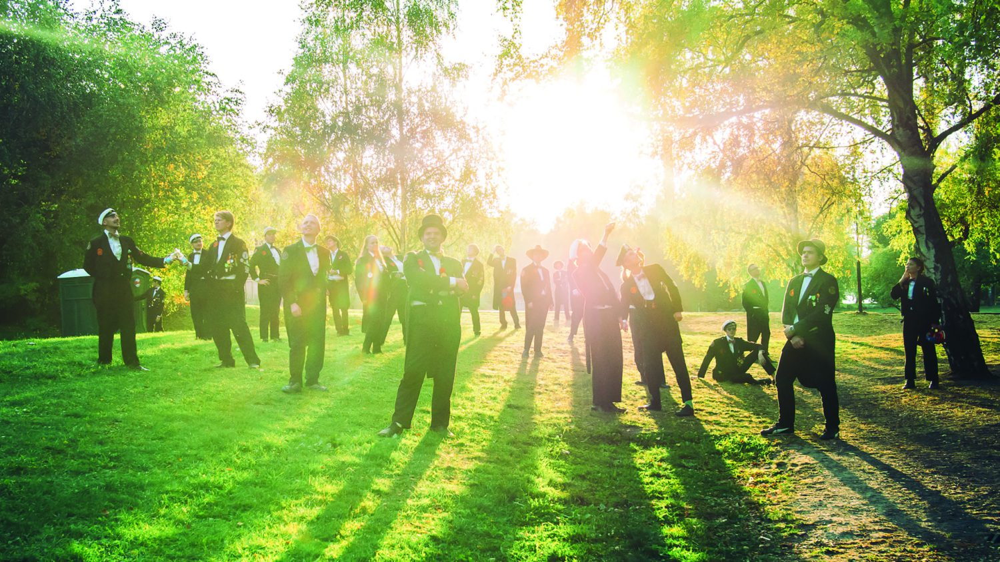

AllianceOrchestret är en studentorkester vid Chalmers som sedan 1948
förgyllt Göteborg med hårdmarsch och show. Vi underhåller ofta på
sittningar och fester där vi bjuder gästerna på musik, gückel och magi.
Orkesterns stora fördel, jämte dess självklara förträfflighet, är
dess stora flexibilitet. Vi kan konsten att förvandla vilket litet
skrymsle som helst till en scen och ser till att publiken får en show
de sent ska glömma!
Eftersom vi själva inte kan dansa, uppträder vi
gärna tillsammans med vår favoritbalett Chalmersbaletten som stormar
scenen med showdans som CanCan och Charleston!

Boka oss
Vill du boka AllianceOrchestret till ditt evenemang? Eller vill du kanske
bara veta lite mer? Kontakta då vår Disponent (ordförande) Holger “Ässet”
Lindström på:
disponent@alliancen.se
eller
076-171 91 27
Vi kräver ingen uppriggning och nästan inget arbete av dig som bokar
oss.
Sök orchestret
Går du på Chalmers och gillar blåsmusik? Spela med oss, det blir kul!
Under läsperiod 1, läsvecka 1,2,3 och 4 har AllianceOrchestret nyintag.
Då välkomnar vi dig som läser på Chalmers och är blåsmusiker eller
slagverkare att komma och provrepa med oss.
Vi repar på måndagar kl 19:00 i Kårrestaurangen på campus
Johanneberg. Ta med dig instrument om du har, annars kom som du är! Det
blir kul, det kan vi lova!
